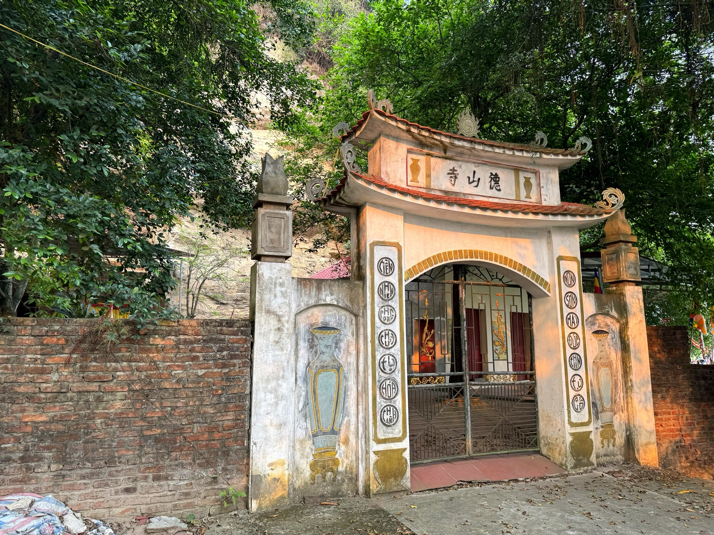
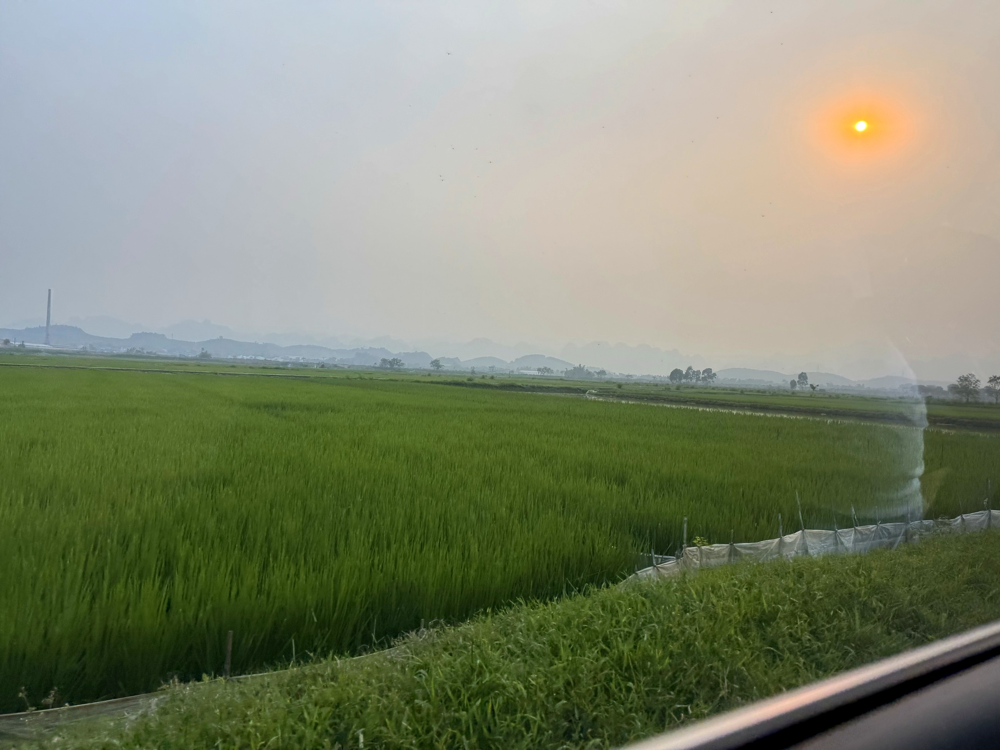
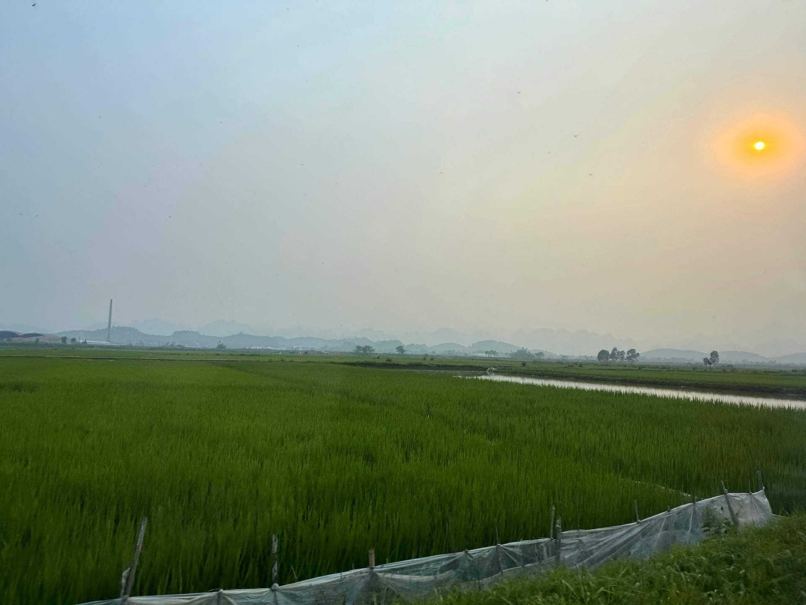

Loại hìnhTypeType
Cảnh quan thiên nhiênNatural landscapesPaysages naturels

Hang Hổ là hệ thống hang đá xuyên núi, dài khoảng 80m, rộng 30m, chiều cao từ 5m đến gần 10m tại điểm rộng nhất. Trong lòng hang có 2 bầu nước, một nông và một sâu — nguồn nước tự nhiên đặc biệt giữa núi đá vôi.
Tên "Hang Hổ" gắn với tín ngưỡng thờ Quan Ngũ Hổ — đại diện cho quyền năng của Ngũ hành (Kim, Mộc, Thủy, Hỏa, Thổ), bảo vệ bình an cho nhân dân. Trong kháng chiến chống Pháp và chống Mỹ, hang là địa điểm bộ đội công binh đúc đạn phục vụ tiền tuyến — dấu tích cách mạng quan trọng còn in đậm trong ký ức các cụ cao niên địa phương. Với người dân Mường Cốc, Hang Hổ là sự giao thoa đặc biệt giữa di tích cách mạng và tín ngưỡng thờ thần bản địa.
Hang Ho Cave is a mountain-traversing cave system, approximately 80m long, 30m wide, and ranging from 5m to nearly 10m high at its widest point. Inside, two natural pools — one shallow, one deep — form a unique water source amidst the limestone mountains.
The name "Hang Hổ" (Tiger Cave) is associated with the worship of Quan Ngũ Hổ (Five Tiger Deities) — representing the power of the Five Elements (Metal, Wood, Water, Fire, Earth), protecting the peace of the people. During the resistance wars against the French and Americans, the cave served as a site where engineering troops cast bullets for the front lines — a significant revolutionary relic still vivid in the memories of local elders. For the people of Mường Cốc, Hang Hổ is a special intersection of revolutionary history and indigenous deity worship.
La grotte Hang Ho est un système de grottes traversant la montagne, d'environ 80m de long, 30m de large et de 5m à près de 10m de haut à son point le plus large. À l'intérieur, deux bassins naturels — un peu profond, un profond — forment une source d'eau unique au milieu des montagnes calcaires.
Le nom "Hang Hổ" (Grotte du Tigre) est lié au culte de Quan Ngũ Hổ (Divinités des Cinq Tigres) — représentant le pouvoir des Cinq Éléments (Métal, Bois, Eau, Feu, Terre), protégeant la paix du peuple. Pendant les guerres de résistance contre les Français et les Américains, la grotte a servi de site où les troupes du génie coulaient des balles pour le front — une relique révolutionnaire importante encore vivace dans la mémoire des anciens locaux. Pour les habitants de Mường Cốc, Hang Hổ est une intersection particulière entre le vestige révolutionnaire et le culte des divinités indigènes.
| Tham quan hang độngCave ExplorationExplorez les grottes | Khám phá không gian hang xuyên núi, 2 bầu nướcExplore the mountain-crossing cave space with its two water pools.Découvrez l'espace de la grotte traversant la montagne, avec ses deux bassins d'eau. |
| Chiêm bái Quan Ngũ HổAdmire the Five Tiger DeitiesAdmirez les Cinq Divinités Tigres | Dâng hương tại khu vực thờ tự trong hangOffer incense at the cave's sacred altar.Offrez de l'encens à l'autel sacré de la grotte. |
| Hướng dẫn tại chỗLocal GuidesGuides Locaux | Giới thiệu tín ngưỡng Ngũ Hổ và lịch sử kháng chiếnLearn about the Five Tigers belief and resistance history.Découvrez la croyance des Cinq Tigres et l'histoire de la résistance. |
| Tham quan di tích cách mạngExplore Revolutionary SitesExplorez les sites révolutionnaires | Nghe kể về xưởng đúc đạn trong kháng chiếnHear fascinating stories of the wartime bullet casting workshopÉcoutez des récits fascinants sur l'atelier de fabrication de balles en temps de guerre |
| Chụp ảnh hang độngPhotograph the CavesCapturez la beauté des grottes | Không gian hang đá độc đáo, ánh sáng tự nhiênUnique cave space with natural light.Espace de grotte unique, éclairé par la lumière naturelle. |


Hang Hổ hướng tới phát triển thành điểm khám phá hang động kết hợp diễn giải di tích cách mạng và tín ngưỡng dân gian, tạo trải nghiệm độc đáo không thể tìm thấy ở nơi khác. Giai đoạn tiếp theo sẽ xây dựng hệ thống chiếu sáng an toàn, biển thông tin lịch sử tại cửa hang, và liên kết với Đền Quán Mai thành cụm tham quan liên hoàn trong tuyến A Mường Cốc. Điểm đến Du lịch cộng đồng Mường Cốc, Xã Mỹ Đức – Thành phố Hà NộiHang Ho Cave aims to develop into a cave exploration site combining revolutionary relic interpretation and folk beliefs, creating a unique experience found nowhere else. The next phase will involve building a safe lighting system, historical information signs at the cave entrance, and linking with Den Quan Mai to form a continuous cluster of attractions along the Muong Coc A route. Muong Coc Community-Based Tourism Destination, My Duc Commune – Hanoi City.La Grotte Hang Hổ vise à devenir un site d'exploration de grottes combinant l'interprétation des vestiges révolutionnaires et des croyances populaires, créant une expérience unique introuvable ailleurs. La prochaine phase consistera à construire un système d'éclairage sécurisé, des panneaux d'information historique à l'entrée de la grotte, et à la relier au Đền Quán Mai pour former un ensemble de sites interconnectés sur l'itinéraire A de Mường Cốc. Destination de Tourisme Communautaire Mường Cốc, Commune de Mỹ Đức – Ville de Hà Nội.